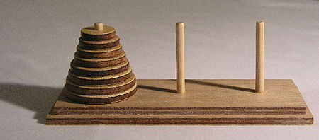

sprint=hanoi.tower
This sprint is about the famous Hanoi tower problem.
See its
description
on Wikipedia. To paraphrase:
Ce sprint concerne le fameux problème des tours de Hanoi, dont
vous pouvez voir la description sur
description
Wikipedia. Pour paraphraser:
The Tower of Hanoi is a mathematical game or puzzle.
It consists of three rods, and a number of disks of different sizes
which can slide onto any rod. The puzzle starts with the disks in a neat stack
in ascending order of size on one rod,
the smallest at the top, thus making a conical shape.
The objective of the puzzle is to move the entire stack to another rod,
obeying the following simple rules:
Les tours de Hanoi sont un jeu mathématique. Il consiste en trois
piliers, et un nombre de disques de différentes tailles
qui peuvent s'enfiler sur les piliers. Le jeu commence avec
les disques empilés dans l'ordre ascendant de leur taille sur l'un
des piliers. Le plus petit disque au sommet, le plus
grand en bas, formant donc un cône.
L'objectif du jeu est de déplacer la pile de disque vers
un autre pilier, en respectant les règles suivantes:
-
Only one disk can be moved at a time.
Un seul disk peut être déplacer à chaque coup.
-
Each move consists of taking the upper disk from one of the stacks
and placing it on top of another stack i.e. a disk can only be moved
if it is the uppermost disk on a stack.
Chaque coup déplace un disk au sommet d'une pile vers le sommet
d'une autre pile.
-
No disk may be placed on top of a smaller disk.
Un disk ne peut être placé au dessus d'un disk plus petit.
With three disks, the puzzle can be solved in seven moves.
The minimum number of moves required to solve a Tower of Hanoi puzzle
is 2n – 1, where n is the number of disks.
We will use this fun puzzle as a background to practice object-oriented
design and coding. This time, we will guide you through the steps of
design classes, coding them, and testing them. This sprint
will happen in the hanoi.tower directory in your
Eclipse workspace.
Hence, please import the existing hanoi.tower
project in your Eclipse workspace.
Vous allez utiliser ce jeu sympathique pour mettre en
pratique vos compétences de programmation. Cette fois nous allons
vous guider dans la conception des classes, dans leur codage et
leur test. Ce sprint prend place dans le répertoire hanoi.tower
de votre workspace Eclipse. Veuillez importer le projet
hanoi.tower dans votre workspace Eclipse.
Hanoir Tower Overview
So, what entities do we have in this puzzle and how can
they be grouped in classes? Let's read again the Wikipedia
description:
Comme expliqué précédemment, les objets sont utilisés pour
représenter les entités et les classes pour représenter les classes
d'entités. Donc, quelles entités avons nous dans ce jeu et comment
les regrouper en classes? Lisons à nouveau la description
Wikipedia:
The Tower of Hanoi is a mathematical game or puzzle.
It consists of three pegs, and a number of disks of different sizes
which can slide onto any peg. The puzzle starts with the disks in a neat stack
in ascending order of size on one rod, the smallest at the top,
thus making a conical shape.
Les tours de Hanoi sont un jeu mathématique. Il consiste en trois
piliers, et un nombre de disques de différentes tailles
qui peuvent s'enfiler sur les piliers. Le jeu commence avec
les disques empilés dans l'ordre ascendant de leur taille sur l'un
des piliers. Le plus petit disque au sommet, le plus
grand en bas, formant donc un cône.

Made by Evanherk.
GNU Free Documentation License
So it seems that we have disks, pegs, and a puzzle
to solve.
So it seems logical to have the following classes:
-
class Disk
-
class Peg
-
class Solver
With these three concepts, look at the animation below to see how it is solved.
This animation is licensed under the
Creative Commons
and
Attribution-Share
Alike 2.5 generic license.
Author Aka.

Tasks